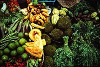

| Food supplies the energy, vitamins and nutrients necessary to sustain life. Different cultures eat different foods prepared in different ways. Over the centuries every culture has developed ways of satisfying the human body's nutritional needs. Technological advances have altered many traditional diets by introducing new foods and processing techniques. The quality, quantity and variety of available food eaten often reflects the status of a person or a culture. Through history, cultures have developed combinations of foods that supply vital nutrients. Rice, with legumes or pulses is a traditional source of protein for many people. |
|

Modern versus Traditional The modern supermarket offers a wide variety of foods, from organically grown produce to fully prepared meals. Traditionally, people eat foods native to their environment at the time of harvest, with only minimal processing such as drying or salting. In many cultures there are often seasonal shortages of some foods such as fresh fruits and vegetables. Modern technology has had a major influence on food consumption and production. Improved transportation means food such as out-of-season fruits and vegetables can be imported from great distances. Processing and preserving methods prolong the freshness of perishable foods.

Fruits and Vegetables At one time, fruits and vegetables were eaten only where they were grown. Importing and exporting brings a wide variety of fresh produce to consumers around the world. The market place is a centuries-old source of foods and goods. From individual traders to international supermarkets, the tradition continues today. Entire families, including the children, help out at the family's market stall. |